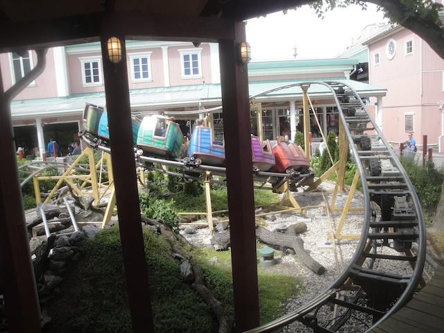
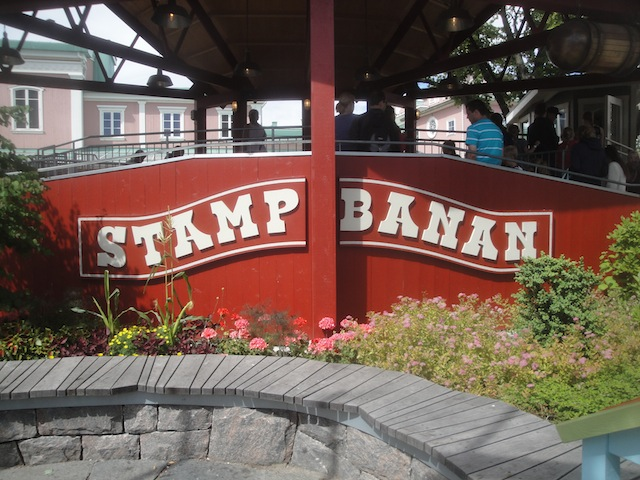

| |
Stampbanan Review

We're here at Liseberg. For you credit whores, there's Stampbanan. Yes, Liseberg has a kiddy coaster. But this is their kiddy kiddy coaster. You can at least ride Rabalder for fun. This, there's no riding unless you're really trying to credit whore. You climb into the cars, and barely fit. And we're off!!! We start to climb the lifthill. We struggle, but we're in the little car that could. I know the operator joked that we weren't going to make it over the lifthill, but needless to say, we made it. You then go down a helix for the first drop and around a turn. And yeah. That's the ride. Though you do get multiple laps on it. You can easily tell that this coaster is not made for adults to ride. Hey, it may be boring, but at least it's not a painful kiddy coasters. But even so, it's still just a tiny kiddy coaster. If you're a credit whore and need the credit, ride it. Otherwise, SKIP!!!!
1/10
Location: Liseberg
Opened: 2013
Built by: Preston & Barbieri
Last Ridden: June 22, 2014
I have ridden this exact same ride at the following parks.
Dollywood
Stampbanen Photos

Home
|